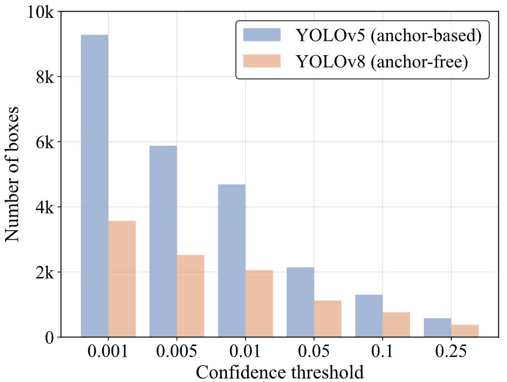
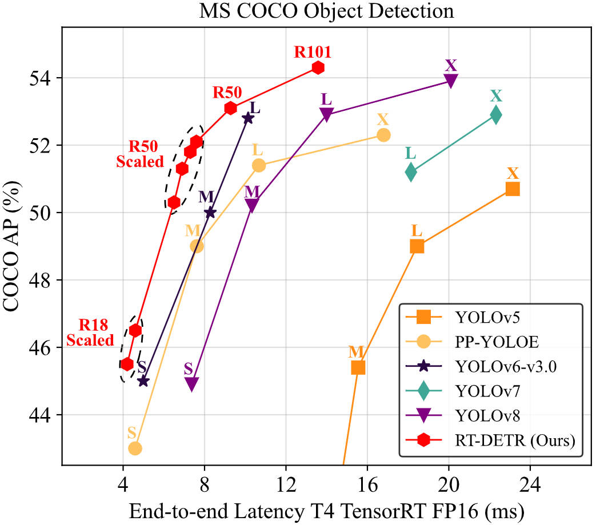
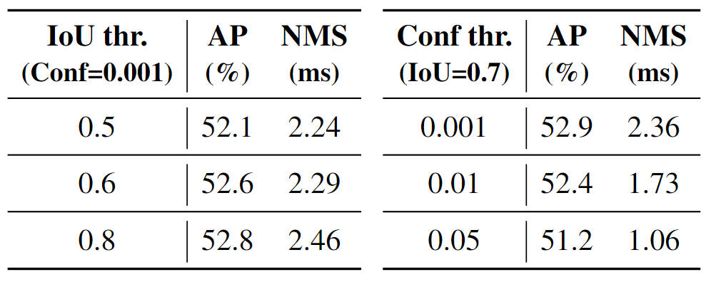
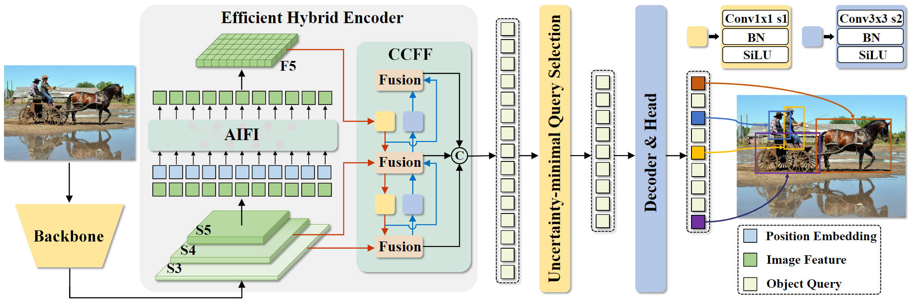
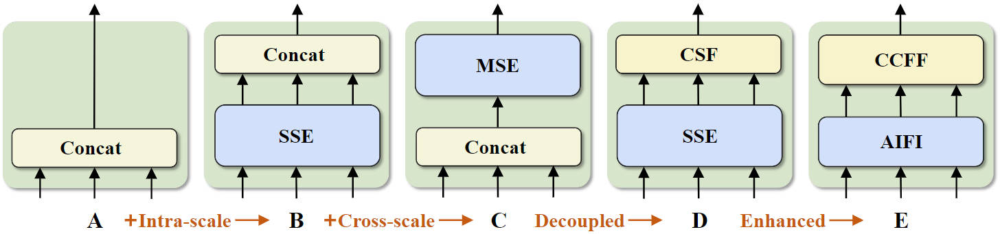
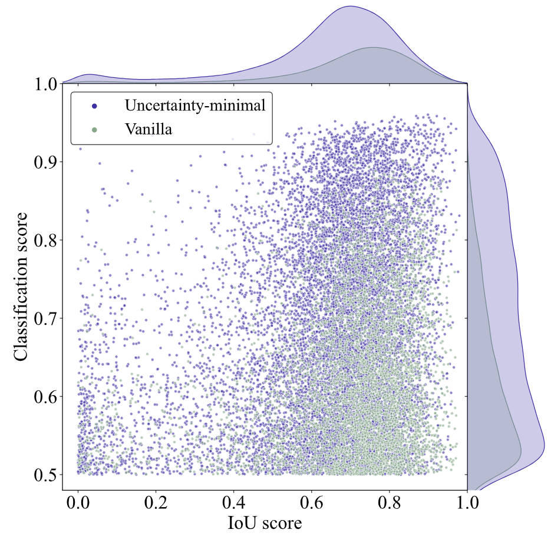

Abstract

The YOLO series has become the most popular framework for real-time object detection due to its reasonable trade-off between speed and accuracy. However, we observe that the speed and accuracy of YOLOs are negatively affected by the NMS. Recently, end-to-end Transformer-based detectors~(DETRs) have provided an alternative to eliminating NMS. Nevertheless, the high computational cost limits their practicality and hinders them from fully exploiting the advantage of excluding NMS.
In this paper, we propose the Real-Time DEtection TRansformer (RT-DETR), the first real-time end-to-end object detector to our best knowledge that addresses the above dilemma. We build RT-DETR in two steps, drawing on the advanced DETR: first we focus on maintaining accuracy while improving speed, followed by maintaining speed while improving accuracy. Specifically, we design an efficient hybrid encoder to expeditiously process multi-scale features by decoupling intra-scale interaction and cross-scale fusion to improve speed. Then, we propose the uncertainty-minimal query selection to provide high-quality initial queries to the decoder, thereby improving accuracy.
In addition, RT-DETR supports flexible speed tuning by adjusting the number of decoder layers to adapt to various scenarios without retraining. Our RT-DETR-R50 / R101 achieves 53.1% / 54.3% AP on COCO and 108 / 74 FPS on T4 GPU, outperforming previously advanced YOLOs in both speed and accuracy. Furthermore, RT-DETR-R50 outperforms DINO-R50 by 2.2% AP in accuracy and about 21 times in FPS. After pre-training with Objects365, RT-DETR-R50 / R101 achieves 55.3% / 56.2% AP.
NMS Analysis
NMS is a widely used post-processing algorithm in object detection, employed to eliminate overlapping output boxes. Two thresholds are required in NMS: confidence threshold and IoU threshold. Specifically, the boxes with scores below the confidence threshold are directly filtered out, and whenever the IoU of any two boxes exceeds the IoU threshold, the box with the lower score will be discarded. This process is performed iteratively until all boxes of every category have been processed. Thus, the execution time of NMS primarily depends on the number of boxes and two thresholds. We leverage YOLOv5 (anchor-based) and YOLOv8 (anchor-free) for analysis.

We use YOLOv8 to evaluate the accuracy on the COCO val2017 and test the execution time of the NMS under different hyperparameters. We test the speed on T4 GPU with TensorRT FP16, and the input and preprocessing remain consistent.
We count the number of boxes remaining after filtering the output boxes with different confidence thresholds on the same input. As the confidence threshold increases, more prediction boxes are filtered out, and the number of remaining boxes that need to calculate IoU decreases, thus reducing the execution time of NMS. With a confidence threshold of 0.001 and an IoU threshold of 0.7, YOLOv8 achieves the best AP results, but the corresponding NMS time is at a higher level.
Method
Overview

We feed the features from the last three stages of the backbone into the encoder. The efficient hybrid encoder transforms multi-scale features into a sequence of image features through the Attention-based Intra-scale Feature Interaction (AIFI) and the CNN-based Cross-scale Feature Fusion (CCFF). Then, the uncertainty-minimal query selection selects a fixed number of encoder features to serve as initial object queries for the decoder. Finally, the decoder with auxiliary prediction heads iteratively optimizes object queries to generate categories and boxes.
Hybrid Encoder

The evolution of the hybrid encoder. SSE represents the single-scale Transformer encoder, MSE represents the multi-scale Transformer encoder, and CSF represents cross-scale fusion. AIFI and CCFF are the two modules designed into our hybrid encoder.
Uncertainty-minimal Query Selection

To analyze the effectiveness of the uncertainty-minimal query selection, we visualize the classification scores and IoU scores of the selected features on COCO val2017. We draw the scatterplot with classification scores greater than 0.5. The purple and green dots represent the selected features from the model trained with uncertainty-minimal query selection and vanilla query selection, respectively. The closer the dot is to the top right of the figure, the higher the quality of the corresponding feature, i.e., the more likely the predicted category and box are to describe the true object. The top and right density curves reflect the number of dots for two types. The most striking feature of the scatterplot is that the purple dots are concentrated in the top right of the figure, while the green dots are concentrated in the bottom right. This shows that uncertainty-minimal query selection produces more high-quality encoder features.
Video
Qualitative Results
Complex Scenarios

Difficult Conditions